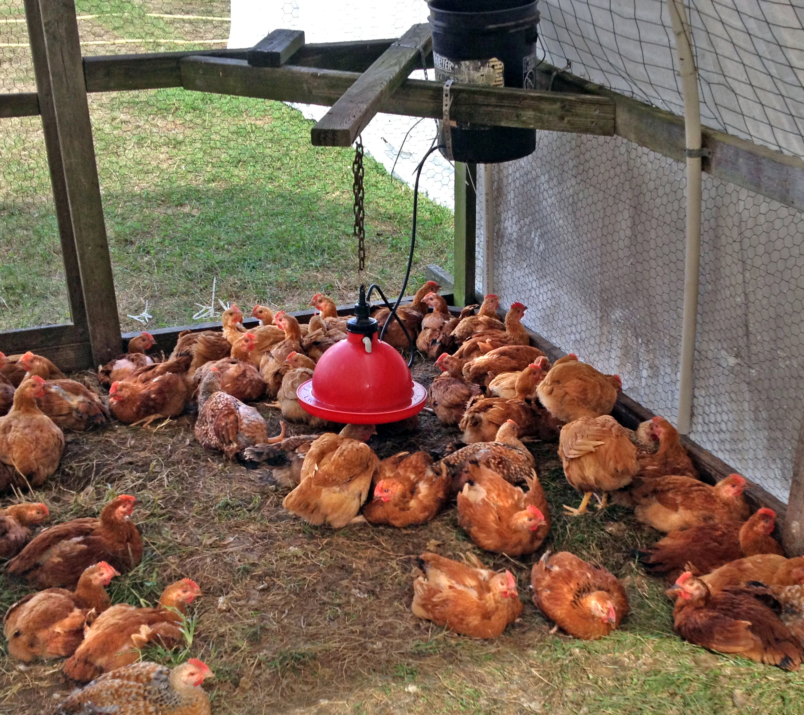

Suhu & kelembapan
Pembacaan udara kandang dengan penanda otomatis saat keluar dari ambang yang kamu atur.
Prototipe front-end · data simulasi
Suhu, kelembapan, pakan, air minum, cahaya, dan musik — terbaca dalam satu layar, dan bisa kamu kendalikan langsung dari ponsel.

Tekan tombol di bawah. Angka sensor dan grafik ikut berubah — persis seperti di panel pengguna.
Pembacaan udara kandang dengan penanda otomatis saat keluar dari ambang yang kamu atur.
Status tempat pakan dan levelnya, plus notifikasi saat menipis.
Buka atau tutup aliran air langsung dari ponsel, tanpa masuk kandang.
Mode tetap merah + warm white, dengan jadwal nyala dan padam.
Putar musik untuk menenangkan ayam, lengkap dengan pengatur volume.
Pratinjau area kandang. Stream langsung masih dalam pengembangan.
Angka besar, warna status yang jelas, dan navigasi bawah untuk ibu jari. Tidak perlu zoom, tidak perlu scroll dua kali.

Kandang yang dipantau manual kehilangan detail. Di sini semua tercatat, dan bisa dibuka dari mana saja.
Data hilang begitu buku catatan selesai dipakai.
Masuk dengan akun demo, atau daftarkan akun pengguna sendiri.